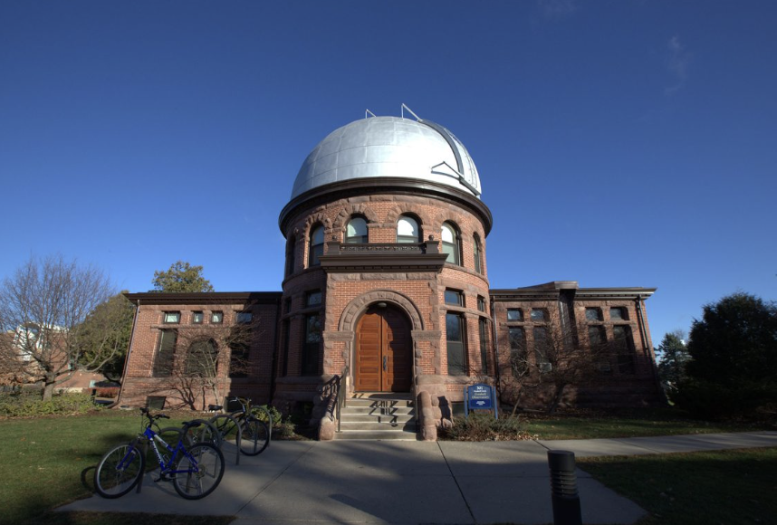

Another one of Carleton’s oldest buildings,Goodsell was built in 1887 by J Walter. Goodsell is quite romanesque in design - although it doesn’t directly call back to a direct medieval movement. It is like 11th-12th century style. Goodsell is composed of separate masses instead of one cubic block (like Willis).

Although so old, Goodsell has held a consistent job as Carleton’s observatory since its conception nearly 140 years ago. This building definitely belongs to the “Early Buildings” era.